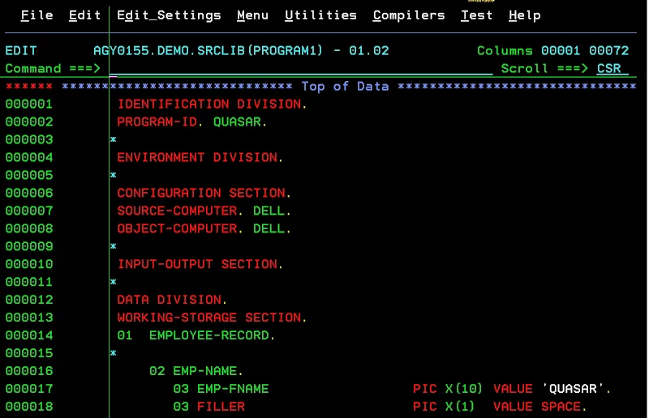
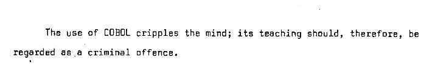

COBOL
Stands for Common Business-Oriented Language. It was meant to be very similar to the natural English language so the code is self-documented. As a result of this, programs became way too large and were difficult to maintain because of the many reserved words the language had.
It was made in 1959 by Grace Hopper. It is still heavily used, it's present in many instances of legacy code.
 Warning
Warning
We saw some statistics in class detailing the current use of COBOL accross the industry and universities worldwide. However, the article has many "ChatGPT-isms" and doesn't cite any real sources for their data, so I'd suggest taking it with a grain of salt or two. You can find the article here.

An example of COBOL code. Note the 'divisions' of code.

A quote from Edsger W. Dijkstra's "EWD 498: How do we tell truths that might hurt?" manuscript that mentions COBOL.
Go Back